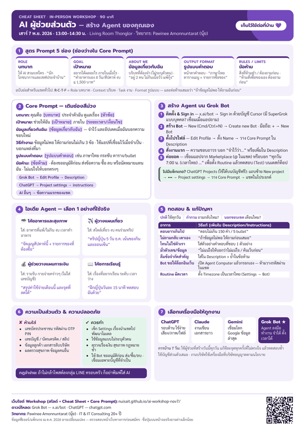

1
Predictive AI
AI เชิงคาดการณ์
ใช้ข้อมูลในอดีตเพื่อพยากรณ์ จัดกลุ่ม หรือช่วยตัดสินใจ
ตัวอย่าง: แนะนำสินค้า · คัดกรองอีเมลสแปม
“girls, coffee & ai” · 90 นาที
เวิร์กช็อป 90 นาทีเรื่อง AI ในชีวิตประจำวัน: รู้จัก AI 3 แบบ เลือกเครื่องมือให้เหมาะกับงาน และดูไอเดียสร้าง Agent ของตัวเอง
วิทยากร Pawinee Amonnuntarat (นุ้ย)
Today’s Speaker
Project Director at Thai Major Bank
Agenda
รวม 90 นาที · 13:00–14:30 น. · Living Room Thonglor
01 What's AI
จากคาดการณ์ สู่สร้างสรรค์ สู่ลงมือทำ
1
AI เชิงคาดการณ์
ใช้ข้อมูลในอดีตเพื่อพยากรณ์ จัดกลุ่ม หรือช่วยตัดสินใจ
ตัวอย่าง: แนะนำสินค้า · คัดกรองอีเมลสแปม
2
AI สร้างสรรค์
สร้างเนื้อหาใหม่ได้เอง เช่น ข้อความ รูป เสียง วิดีโอ
ตัวอย่าง: ChatGPT · Gemini
3
ผู้ช่วย AI ที่ลงมือทำ
วางแผน ตัดสินใจ และทำงานหลายขั้นตอนเองเพื่อไปให้ถึงเป้าหมาย
ตัวอย่าง: Grok Bot
ยิ่งไปทางขวา AI ยิ่งทำงานแทนเราได้มากขึ้น — วันนี้จะได้เห็นทางสร้าง AI Agent ของตัวเอง
ยิ่งสั่งชัด ยิ่งได้ผลดี
AI ไม่ได้ให้คำตอบที่ถูกต้องเสมอ และมี bias ได้ไม่ต่างจากคน เรื่องเงิน สุขภาพ และกฎหมาย ให้เช็กแหล่งทางการ และขอให้ AI บอกแหล่งที่มา
ปรับ AI ให้เข้าใจเรา: ตั้ง Custom Instructions ใน ChatGPT — บอกข้อมูลพื้นฐาน ความชอบ และวิธีตอบครั้งเดียว ตำแหน่งเมนูให้เช็กในแอป เพราะหน้าจออาจเปลี่ยน
ChatGPT
ผู้ช่วยรอบด้าน
โดย OpenAI · ใช้งานทุกวัน ครบทุกอย่าง
Claude
นักเขียน & นักคิด
โดย Anthropic · งานเขียน เอกสาร โค้ด
Gemini
สาย Google
โดย Google · Web, Gmail, Drive, รูป, วิดีโอ
Grok
ข่าวไว ทันกระแส
โดย xAI · เทรนด์ X และสร้าง Agent
02 AI Use Cases
หัวข้อที่เดโมในห้อง
งานบริษัท: ใช้เฉพาะเครื่องมือที่องค์กรอนุมัติ และห้ามใส่ข้อมูลลูกค้า ข้อมูลลับ รหัสผ่าน หรือ API key
03 AI Agent Demo
แชตบอตตอบเมื่อเราสั่ง ส่วน Agent ลงมือทำงานหลายขั้นตอน และเริ่มเองตามเวลาหรือเหตุการณ์ได้
| หัวข้อ | Chatbot | Agent |
|---|---|---|
| ทำอะไร | ตอบคำถาม ให้คำแนะนำ | ลงมือทำงานหลายขั้นตอน |
| ใครเริ่ม | เราต้องสั่งทุกครั้ง | ทำเองตามเวลาหรือเหตุการณ์ |
| เครื่องมือ | อยู่ในหน้าแชต | เข้าอีเมล ปฏิทิน ไฟล์ เว็บไซต์ได้ |
| ความจำ | จำบทสนทนาได้ | จำวิธีทำงานและความชอบของเรา |
| ตัวอย่าง | ช่วยร่างอีเมลตอบลูกค้า | เช็กอีเมลทุกเช้า ร่างคำตอบ รอเรากดส่ง |
สร้างบอตแล้วให้ทำงานร่วมกันได้ แพ็กเกจที่รองรับอาจเปลี่ยน — ดูวิธีล่าสุดที่ x.ai/bot (เปิดในแท็บใหม่)
ดาวน์โหลดจาก x.ai/bot (เปิดในแท็บใหม่)
Sign in บัญชี Cursor และแพ็กเกจที่รองรับ
สร้าง Bot
ใส่ Instructions
สั่งงานแรก
เดโมในห้อง: ผู้ช่วยส่วนตัวที่จองร้าน ส่งอีเมล และลงปฏิทินได้หลายขั้น
Grok Automations: ตั้ง Morning Brief ครั้งเดียว แล้วให้ทำงานตามเวลาบน grok.com (เปิดในแท็บใหม่) — หน้าจอ ณ ต.ค. 2026 อาจเปลี่ยน
ก่อนสร้าง Agent ให้ตอบ 6 ข้อนี้ ตัวอย่างในงานคือ Morning Brief แล้วนำไปใช้เป็นแนว Instructions
เช่น สรุปข่าวที่น่าสนใจ
เช่น ทุกเช้า 7:00 น.
เช่น ข่าว, X, ปฏิทิน
เช่น 5 ข่าว เรื่องละ 2 บรรทัด + ลิงก์
เช่น จะส่งข้อความหาใครก็ตาม
เช่น อ่านจบใน 2 นาที ไม่มีข่าวมั่ว
04 Q&A
15 นาทีสุดท้ายของเวิร์กช็อป สำหรับคำถามจากในห้อง จบ 14:30 น.
Resources
สไลด์ 29 หน้าของ Pawinee Amonnuntarat (นุ้ย) สำหรับเวิร์กช็อป 7 พ.ย. 2026
ดาวน์โหลดสไลด์ (PDF)
สรุปหนึ่งหน้าสำหรับพิมพ์เก็บไว้: AI คืออะไร, สูตร Prompt, Core Prompt, ไอเดีย Agent และความเป็นส่วนตัว
ดาวน์โหลด Cheat Sheet (PDF)ติดต่อ